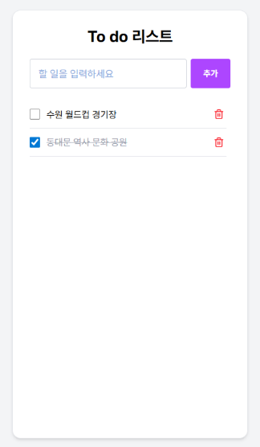
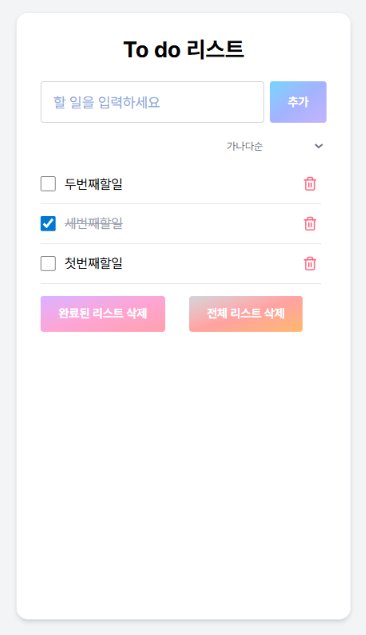

01
Todo List의 기본 기능 구현

단순히 데이터를 넣고 빼는 것을 넘어, 사용자 경험(UX)을 고려한 CRUD(생성, 조회, 수정, 삭제) 로직을 단계별로 구현해 보았습니다.
-
불변성 유지:
push대신 전개 연산자([...])를 사용하여 새로운 배열 생성 -
배열 메서드: 리스트 렌더링에는
map(), 삭제에는filter()활용
function TodoList() { const [todos, setTodos] = useState([ { id: 1, text: "첫 번째 할 일", completed: false } ]); const [todoInput, setTodoInput] = useState(""); // 추가: 기존 배열에 새 객체를 병합하여 업데이트 const handleInsertTodo = () => { if (!todoInput.trim()) return; setTodos([...todos, { id: Date.now(), text: todoInput, completed: false }]); setTodoInput(""); }; // 삭제: filter를 사용하여 해당 ID 제외 const handleDeleteTodo = (id) => { setTodos(todos.filter((todo) => todo.id !== id)); }; // 토글: map을 사용하여 특정 항목의 상태만 변경 const handleCompleteTogle = (id) => { setTodos(todos.map((t) => t.id === id ? { ...t, completed: !t.completed } : t )); }; }
02
기능 추가 및 UX 개선

실제 서비스처럼 정렬 기능, 삭제 확인 모달, 일괄 삭제 기능을 추가하여 완성도를 높였습니다.
// 정렬 로직: 원본은 유지하고 정렬된 사본을 렌더링 const getSortedTodos = () => { const copy = [...todos]; if (sortType === "abc") return copy.sort((a, b) => a.text.localeCompare(b.text)); if (sortType === "status") return copy.sort((a, b) => a.completed - b.completed); return copy; }; // 삭제 모달 연동 및 다중 삭제 지원 const confirmDelete = () => { if (deleteMode === "single") setTodos(todos.filter(t => t.id !== targetId)); else if (deleteMode === "completed") setTodos(todos.filter(t => !t.completed)); else setTodos([]); setIsModalOpen(false); };
03
핵심 포인트 설명
-
렌더링 제어: 원본 데이터(
todos)는 보존하고, 가공된 데이터(sortedTodos)를 출력하는 패턴을 익혔습니다. - 상태 기반 UI: Boolean State를 사용하여 외부 라이브러리 없이 커스텀 모달 팝업을 구현했습니다.
-
UX 디테일: 엔터키 지원(
onKeyDown), 배경 클릭 시 닫기, 삭제 전 확인 절차 등을 적용했습니다.
Comments